Von Bertalanffy Growth Function
Contents
Problem Definition
The equation describes the change in volume 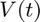 over time:
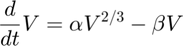
where 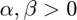.
Stationary Points
A point 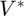 is stationary if 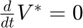, i.e.,
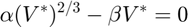
Thus, the equation has two stationary points:
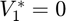 and 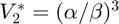.
Numerical Solution
Define the parameters:
alpha = 1; beta = 1;
Define initial conditions 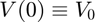:
V_0 = [2.2, .25, .05];
Define the time span for integration 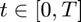, 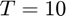:
T = 10; tspan = [0, T];
Define the Von Bertalanffy growth function:
VonBertalanffy = @(t, y) alpha*y.^(2/3) - beta*y;
Numerically solve using ode45:
[t, V] = ode45(VonBertalanffy, tspan, V_0);
res = table(t, V, VariableNames={'t, time', 'V, paths'});
[head(res, 5); tail(res, 5)]
ans =
10×2 table
t, time V, paths
________ ______________________________
0 2.2 0.25 0.05
0.029303 2.1852 0.25431 0.052542
0.058606 2.1706 0.25862 0.055142
0.087909 2.1562 0.26294 0.0578
0.11721 2.1421 0.26726 0.060515
9.7033 1.0359 0.95691 0.92722
9.7775 1.035 0.95795 0.92895
9.8516 1.0342 0.95896 0.93065
9.9258 1.0333 0.95995 0.9323
10 1.0325 0.96092 0.93392
Visualization
figure(1); plot(t, V) hold on; % Keep the current plot % Plot the non-zero stationary point: stationary = (alpha/beta)^3; line([0 T], [stationary, stationary], 'LineStyle', '--', 'Color', 'red'); % Add finishing touches: grid on; xlabel('$t$', 'Interpreter', "latex", 'FontSize', 14); ylabel('$V$', 'Interpreter', "latex", 'FontSize', 14); title('$\dot{V} = \alpha V^{2/3} - \beta V$', 'Interpreter', "latex", 'FontSize', 14); subtitle(['$\alpha = ' num2str(alpha), ', \beta = ', num2str(beta), '$'], 'Interpreter', "latex"); legend({'$V_0 = 2.2$', '$V_0 = 0.25$', '$V_0 = 0.05$', 'Stationary Point'}, 'Location', 'northwest', 'Interpreter', "latex"); hold off; % Release the current plot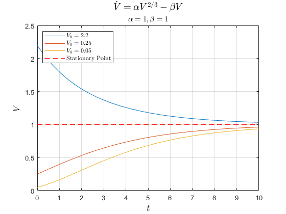